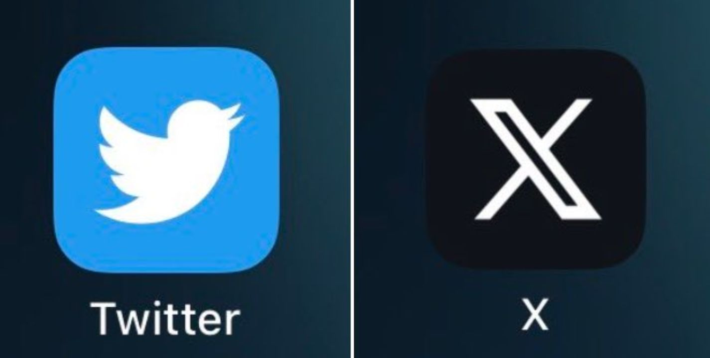

Il y a 619millions d'utilisateus dont 6 millions actifs en France.La persone la plus suivis c'est Elon MUSK avec 174,9 millions d'abonnés.Sur ce réseau sociale ont y trouve environ 60,9% d'utilisateurs qui sont des hommes et 39,1% sont des femmes.De plus ils sont composés de 1500 employés. Ce réseau sociale est le préférer de 3,2% des internautes.Enfin vous devez avoir au moins 13 ans pour utiliser les services
1- Se tenir au courant de l'actualité
2-Suivre des marques ou des produits
3-Regarder du contenu divertissant
4-Publier ou partager des photos et vidéos
5-Envoyer des messages aux amis, aux proches et à la famille